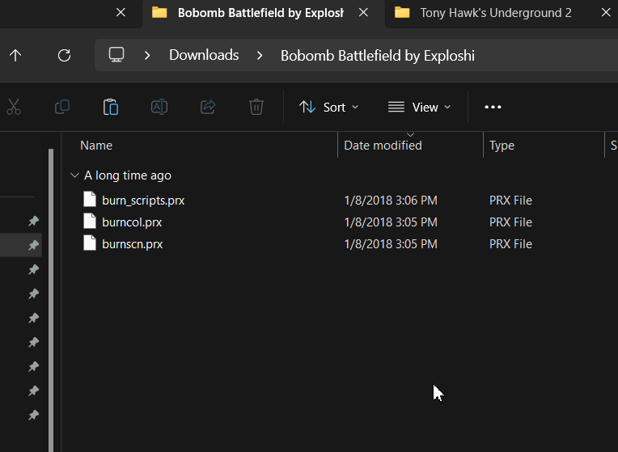

Imagine every level, skater, and trick from the Neversoft era crammed into one glorious package, running on the Tony Hawk’s Underground 2 engine. It’s like the Avengers of skateboarding games—except instead of saving the world, you’re pulling off million-point combos while dressed as Darth Maul.
This mod is a skater’s paradise. Over 60 levels from Pro Skater 1 to Project 8? Check. Custom soundtracks so you can shred to your favorite bangers? Check. Online multiplayer with active servers where you can show off your cursed custom skater creations? Oh, absolutely. Whether you’re reliving the classics, skating through Firelink Shrine from Dark Souls, or just trying to figure out how to “butt slap” like the pros, THUG Pro has something for everyone. It’s endlessly customizable, hilariously chaotic, and the perfect way to keep the Tony Hawk dream alive. So stop pretending you’re too busy and download it already. Skate or die, dude.

Some antivirus programs might freak out about THUG Pro. If that happens, just add an exception for the THUG Pro installation folder. I've never had this issue, but if you do, don't worry—it's safe.
Download This and Extract It:
⭐ THUG PRO.zip ⭐Everything you need will be in that folder.
Game Installation
-
Install the Prerequisites
- Go to the "1. PREREQUISITES" folder
- Install everything in there. These are things Windows 10/11 doesn't include anymore because, well, this game is from 2004
- In the "DIRECTX SETUP" folder, run
DXSETUP.exe
-
Install Tony Hawk's Underground 2
- Open the "2. Tony Hawk Underground 2 INSTALL" folder
- Run
setup.exeand install the game - You can now play vanilla THUG2 if you want, but let's be real— you're here for THUG Pro
-
If it asks for a CD Key (it probably won't, but just in case):
RTGM-AG3X-YBMX-T5R8-1C2E
Mod Installation
-
Copy the Save File
- Go to the "3. SAVE FILE" folder
-
Copy the save file and paste it into:
C:\Program Files (x86)\Activision\Tony Hawk's Underground 2\Game\Save - This is a 100% save file, so everything is unlocked
-
Install THUG Pro
- Open the "4. THUG PRO" folder and run the installer
-
When it asks for the THUG2 game folder, point it to:
C:\Program Files (x86)\Activision\Tony Hawk's Underground 2\Game - Let it import saves and create desktop shortcuts
-
Set Up the Launcher
- You should now have two new icons: THUG Pro and THUG Pro Launcher
- Open the launcher to set your display resolution and controls
- If you're using a controller, make sure it's plugged in before opening the launcher. Go to the Gamepad Binding tab, select your controller, and assign buttons by clicking in the boxes and pressing the corresponding buttons
- There's also a "Face Mapping" option if you want to stretch a cursed .jpg of your friend's face over a character's head. It's there if you're feeling adventurous.
-
Play the Game
- Hit play. Hopefully, it just works
- You don't need to open the launcher every time—just use the regular THUG Pro shortcut unless you need to tweak settings
Find Mods
The community uploads all kinds of character models, maps, boards, and more here: The Vault
Some mods are amazing. Others are... not. If something doesn’t work, it’s probably not your fault. This modding scene is almost a decade old, so expect a little jank.
Installing Character Mods
Character mods usually come with files like this:
.prx.xbx.ska
Here’s where they go:
-
.prx→C:\Program Files (x86)\Activision\Tony Hawk's Underground 2\Game\Data\pre -
.xbx→C:\Program Files (x86)\Activision\Tony Hawk's Underground 2\Game\Data\models\Peds\Ped_CameraMan -
.ska→C:\Users\YOUR USERNAME\AppData\Local\THUG Pro\Save
Pro Tip: You can paste %LOCALAPPDATA%\THUG Pro into your file explorer to jump straight to the save folder.
Keep in mind, you’re always replacing an existing character. For example, you might install Courage the Cowardly Dog, but the game will still call him “Lifeguard” on the character select screen.
Installing Map Mods
Custom maps go in:
%LOCALAPPDATA%\THUG Pro\User
Here is a gif showing the two files that come in a map mod download, and pasting them in that folder:
Some maps overwrite existing stages. Those go in:
%LOCALAPPDATA%\THUG Pro\Data\pre
Again, make backups of the pre folder before replacing
anything.
Here is a gif showing me copying files for a Bob Omb Battlefield map over, and overwriting the Burnside map:
That should cover all the texture mods! It's all some variant of that.
Sometimes the creators don't include any instructions, so I had to figure a lot of this out myself by doing it wrong multiple times first. Hopefully you won't have to do that now.
Custom Soundtracks
Alright, this part is a bit more tedious, but it's worth it.
-
Convert MP3s to WAVs
- Install the audio converter in the "5. MUSIC MODS" folder
- If you don't want to hunt for the .wav files afterward, go into the settings and under Output, check this box:
-
Drag your MP3s into the program, set the output to
.wav, and convert
-
Convert WAVs to BIKs
- Open
radtools.exe(also in the "5. MUSIC MODS" folder) - Select a
.wavfile, click "Bink It!", and adjust the settings: - Compress Level:
0 - Convert Rate:
44100 - Audio:
16-bit stereo - Click "Bink" and repeat for each song
- Open
-
Generate a Playlist
- Open
THUG Pro Soundtrack Generator.exe - Move all your
.bikfiles into themusic filesfolder it creates - Hit Enter, name your playlist, and let it do its thing
- Open
-
Install the Playlist
-
Copy the generated playlist file and folder from the
exportsfolder it made to:%LOCALAPPDATA%\THUG Pro\User - Your playlist should now show up in the game under Music Settings
-
Copy the generated playlist file and folder from the
Bonus: I've included all the Tony Hawk game soundtracks and a few DIY albums in the "5. MUSIC MODS" folder. They're ready to go—just copy them to %LOCALAPPDATA%\THUG Pro\User.
Final Thoughts
That's it! You're all set to dive into THUG Pro and start shredding. If you have any questions, feel free to ask.
Also, check out these resources:
- Official THUGPRO site
- THPSX Forums
- THPSX Discord They have decent instructions as well.
- THPS Subreddit
Now go shred. ✌️